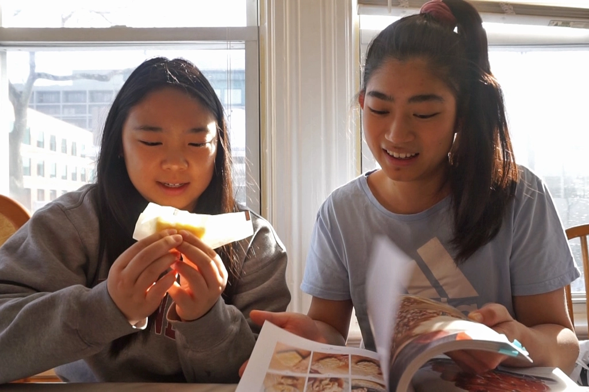
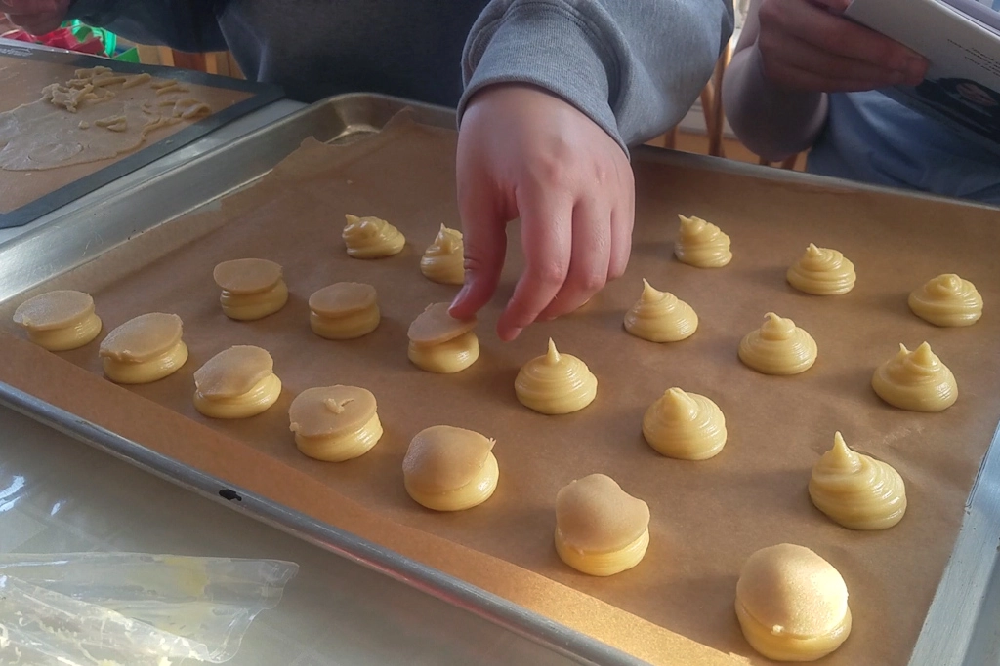
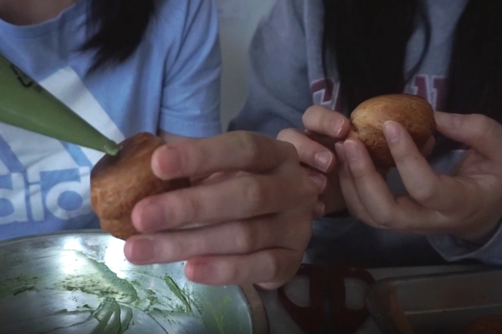
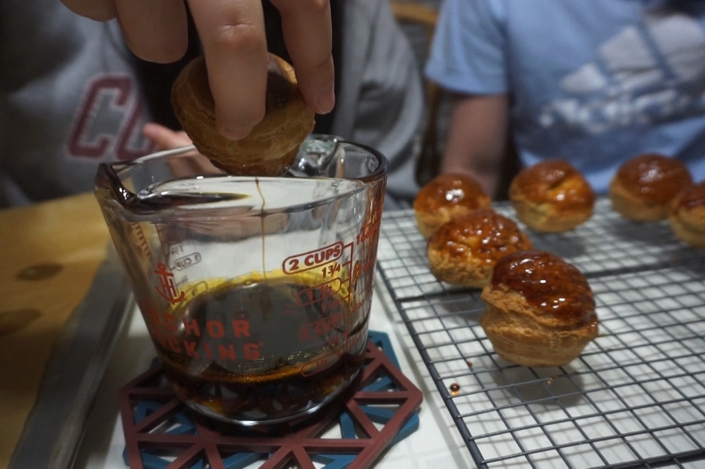
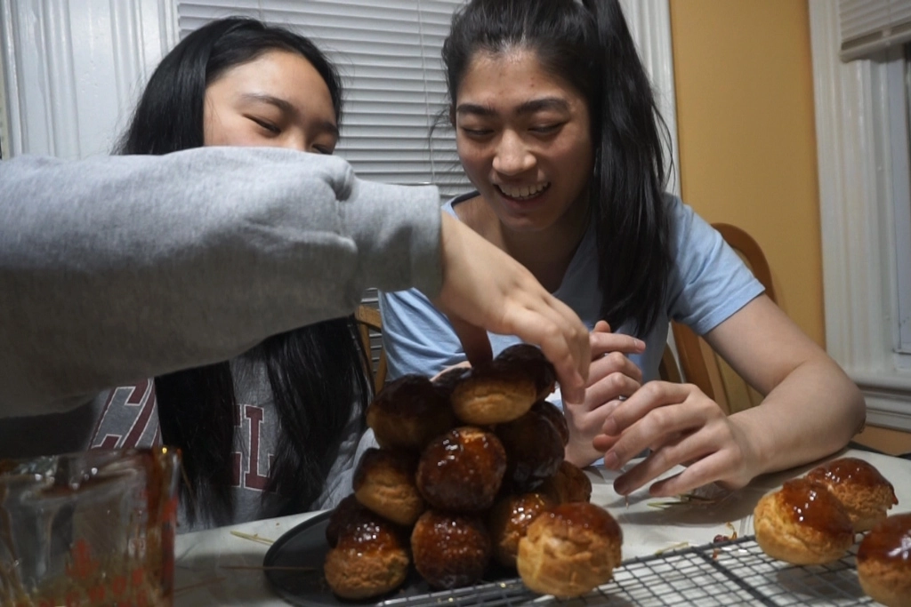
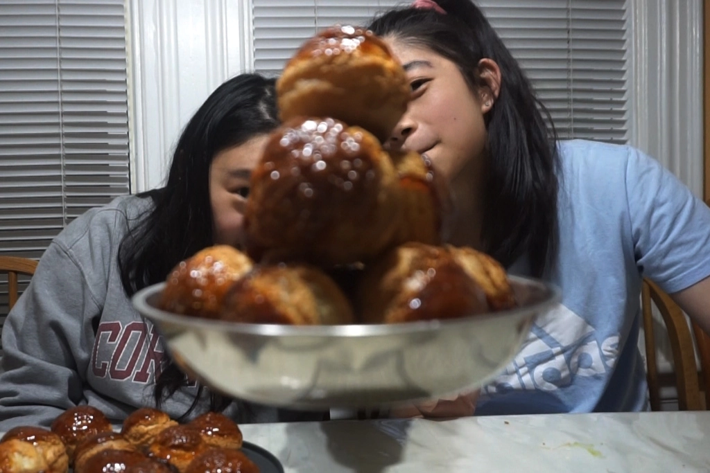

7 Days of Christmas - Attempting a Croquembouche
Dec 23 - Written by Bonnie and Emily
For our fifth video in the Seven Days of Christmas series, we took on the “Mount Everest” recipe in the pastry world as Claire Saffitz described it--Croquembouche!
With our added little twist of matcha flavored pastry cream, we attempted one of the most festive recipes in Claire Saffitz’s Dessert Person recipe book. Going in quite unplanned, a few things unfolded along the way during our journey to this delicious cream puff tower. Although you may have seen Claire make this recipe, you’ll be able to see firsthand how this recipe could turn out for all of us at home!
Since neither one of us had the time to carefully read through the entire recipe in Dessert Person as Claire highly recommends one to do, we had to carefully read the instructions between each step many times. Despite our usual unplanned process, Emily had made cream puffs before so we had a general gist of how and what our pastry cream and dough should look like. Since Claire indicates that this recipe would take up to 4 hours, we decided to split the recipe in half and make a mini tree, especially since we knew we wouldn’t be able to eat 75 of these yummy cream puffs.
And of course, with such a long recipe, we deployed the “Teamwork makes the dreamwork” method and split up the tasks in the recipe. While Emily made the pastry cream, Bonnie was in charge of creating the craquelin for the top of the puffs before coming back together to make the final pastry dough. The little cut out circles for the top of the puffs came out adorably but Bonnie definitely had to work extra quickly to peel the circles off the silicone mat before they started falling apart.
We threw our cream puffs into the oven and started baking. This was considerably smooth sailing until we were about to go rotate the pan and realized we never turned down the oven temperature when we went to bake the puffs. Quickly realizing this error, we rotated the pan, adjusted the temperature and hoped for the best.
The cream puffs came out puffed and golden brown, although since we’ve never made these before, we didn’t realize how big of a puff we had piped onto the mats and ended up with 22 cream puffs instead of the intended 35. Of course we also had to add our own little twist on the cream puffs so instead of following Claire’s plain vanilla flavored cream or the other flavors she recommended, we opted for many large spoonfuls of matcha. Since our cream to puff ratio was unexpectedly off and we weren’t very sure how much cream to put in each puff, we ended up with some unevenly filled puffs, but all is well as long as some cream makes it into each one!
Again, we thought it was smooth sailing from here since all the steps that we had gone through so far had been relatively easy to do but oh boy were we wrong. Since we were unfamiliar with making caramel, we went through a failed batch before getting to a decent caramelized sugar mixture. But little did we know that we had overcooked the caramel and the inability to work quickly made it very difficult for us to assemble our tree.
After attempting to “glue” our mini Croquembouche together and failing, we attempted to use toothpicks to assist in keeping the tree standing but after both methods failing, we ended up with a relatively cute mini cream puff pile instead. Most importantly, regardless of our tree, these cream puffs were so delicious that we would make them again on any relaxing baking day! Although we had gone into this advanced level recipe completely unprepared, we would say we were relatively successful!
